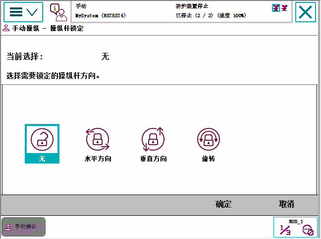

控制杆可以在特定的方向上锁定，从而阻止一个或多个轴的运动。
在微动控制过程中，或需要在特定坐标轴方向执行操作时，这个功能很有用。
注意，锁定的轴取决于当前选定的动作模式。
本节介绍了如何查看控制杆的锁定情况。
操作
1
在 ABB 菜单中，点击 Jogging（微动控制）以查看微动控制属性。
2
要查看控制杆属性，可以点击 Joystick lock（控制杆锁定），或直接查看窗口右角的 Joystick directions（控制杆方向）区域的属性。
锁定的轴用关闭的挂锁标志表示。
本节介绍如何在特定方向锁定控制杆。
在 ABB菜单中，单击微动控制。
点击 Joystick lock（控制杆锁定）。

3
点击需要锁定的轴或控制杆轴。
每点击一次，轴就会在锁定和解锁之间切换一次。
4
点击 确定 ，将轴锁定。
本节介绍如何通过控制杆方向锁来解锁所有轴。
在 ABB 菜单中，点击 Jogging（微动控制）。
点击 无 ，再点击 确定 。